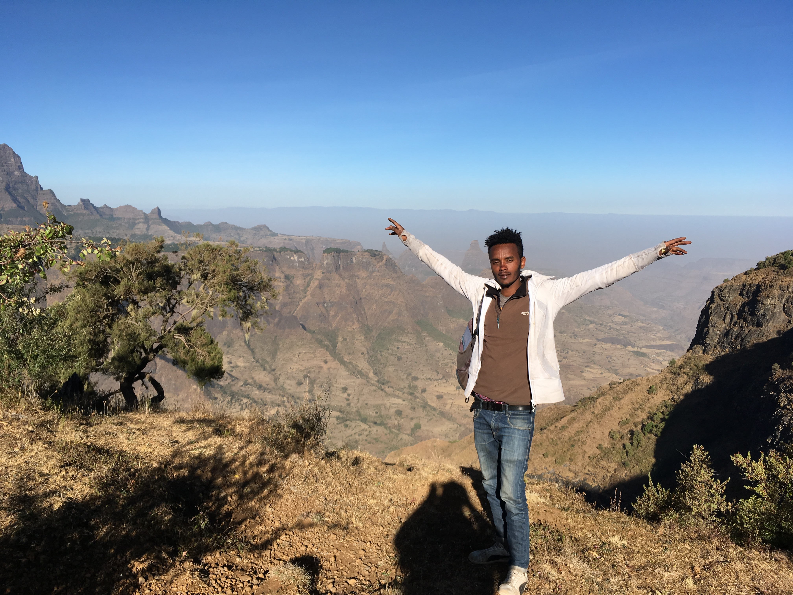

<section class="our-guides">
  <div class="header-filler"></div>
  <section class="page-content-main">
    <div class="page-content-title">
      <h1>Our Guides</h1>
    </div>
    <div class="page-content">
      <div class="guide-content-block">
        
        <h2 class="guide-name">Endalk Mulate</h2>
        <p class="guide-description">
          Endalk is an official, registered tour guide with 8 years of experience guiding and organizing tours in the Simien Mountains National Park. Endalk was born and raised in the village of Ambaras, located in the park. He studied Tourism Management at Gondar University where he concentrated in guiding as well as wildlife and plantlife studies. He has spent nearly two years working as a translator and guide for the University of Michigan research team (studying the Gelada Baboons) and has spent six additional years leading treks with people from all over the world. Endalk is trained and knowledgeable about wildlife in the park, Ethiopian history, trekking organization, and first aid.</br></br>Endalk has a great sense of humor but also takes his service to his clients very seriously. He will go out of his way to make sure your trip runs smoothly. He feels blessed to have grown up in such a spectacular, beautiful place, and can’t wait to share his home with you!
        </p>
      </div>
    </div>
  </section>
</section>
``
